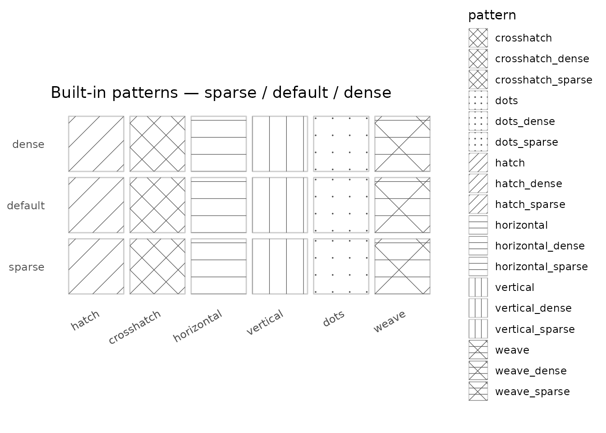

Every built-in pattern ships in three density variants.
pattern_spacing can still be set explicitly to tune further
from any starting point.
library(ggplot2)
library(ggpatchy)
bases <- c("hatch", "crosshatch", "horizontal", "vertical", "dots", "weave")
df <- data.frame(
base = rep(bases, each = 3),
density = rep(c("sparse", "default", "dense"), times = length(bases)),
pattern = c(rbind(
paste0(bases, "_sparse"),
bases,
paste0(bases, "_dense")
)),
x = rep(seq_along(bases), each = 3),
y = rep(c(1, 2, 3), times = length(bases))
)
df$density <- factor(df$density, levels = c("sparse", "default", "dense"))
ggplot(df, aes(x, y, pattern = pattern)) +
geom_tile_pattern(
fill = "white",
colour = "grey80",
pattern_colour = "grey30",
pattern_linewidth = 0.6,
width = 0.9,
height = 0.9
) +
scale_pattern_identity() +
scale_x_continuous(breaks = seq_along(bases), labels = bases) +
scale_y_continuous(breaks = 1:3,
labels = c("sparse", "default", "dense")) +
coord_fixed() +
theme_minimal() +
theme(
panel.grid = element_blank(),
axis.title = element_blank(),
axis.text.x = element_text(size = 9, angle = 30, hjust = 1),
axis.text.y = element_text(size = 9)
) +
labs(title = "Built-in patterns — sparse / default / dense")